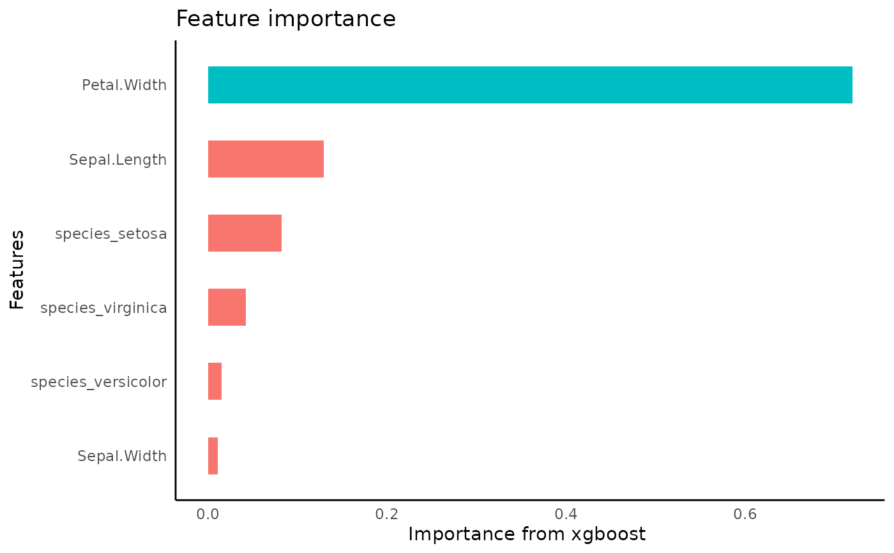

tidy predict
tidy_predict(
model,
newdata,
form = NULL,
olddata = NULL,
bind_preds = FALSE,
...
)
# S3 method for Rcpp_ENSEMBLE
tidy_predict(model, newdata, form = NULL, ...)
# S3 method for glm
tidy_predict(model, newdata, form = NULL, ...)
# S3 method for default
tidy_predict(model, newdata, form = NULL, ...)
# S3 method for BinaryTree
tidy_predict(model, newdata, form = NULL, ...)
# S3 method for xgb.Booster
tidy_predict(
model,
newdata,
form = NULL,
olddata = NULL,
bind_preds = FALSE,
...
)
# S3 method for lgb.Booster
tidy_predict(
model,
newdata,
form = NULL,
olddata = NULL,
bind_preds = FALSE,
...
)model
dataframe
the formula used for the model
training data set
set to TURE if newdata is a dataset without any labels, to bind the new and old data with the predictions under the original target name
other parameters to pass to predict
dataframe
iris %>%
framecleaner::create_dummies(Species) -> iris_dummy
#> 1 column(s) have become 3 dummy columns
iris_dummy %>%
tidy_formula(target= Petal.Length) -> petal_form
iris_dummy %>%
tidy_xgboost(
petal_form,
trees = 20,
mtry = .5
) -> xg1
#> accuracy tested on a validation set
#> # A tibble: 3 × 2
#> .metric .estimate
#> <chr> <dbl>
#> 1 ccc 0.580
#> 2 rmse 1.55
#> 3 rsq 0.910

xg1 %>%
tidy_predict(newdata = iris_dummy, form = petal_form) %>%
head()
#> created the following column: Petal.Length_preds_Table
#> Sepal.Length Sepal.Width Petal.Length Petal.Width species_setosa
#> 1 5.1 3.5 1.4 0.2 1
#> 2 4.9 3.0 1.4 0.2 1
#> 3 4.7 3.2 1.3 0.2 1
#> 4 4.6 3.1 1.5 0.2 1
#> 5 5.0 3.6 1.4 0.2 1
#> 6 5.4 3.9 1.7 0.4 1
#> species_versicolor species_virginica Petal.Length_preds_Table
#> 1 0 0 1.108924
#> 2 0 0 1.108924
#> 3 0 0 1.108924
#> 4 0 0 1.108924
#> 5 0 0 1.108924
#> 6 0 0 1.108924